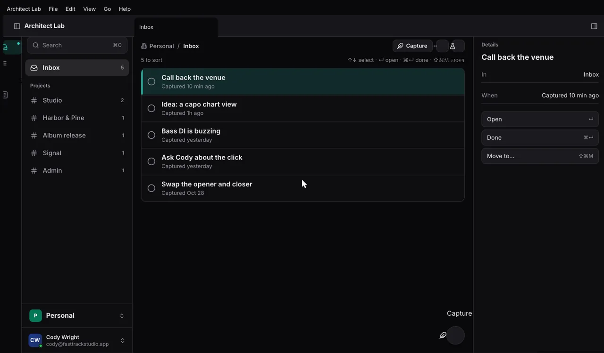
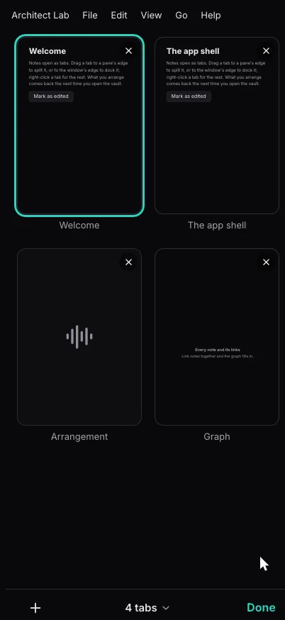
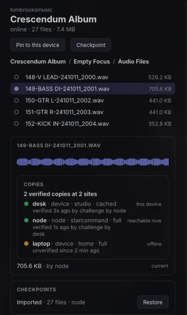
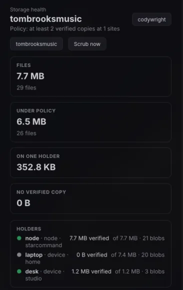
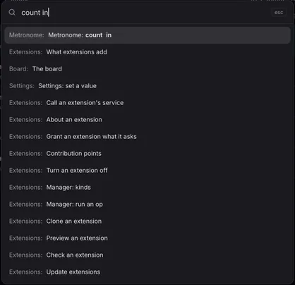
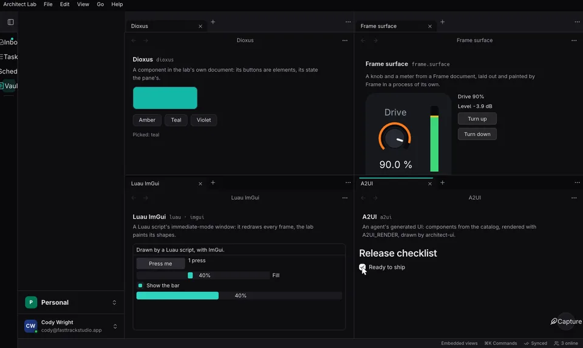

- 1
Node. The Architect app run headless on a home server. One more peer, the one that is always online, holding every project in full.
- 2
Desk. Pins the projects it works on. Each copy is checked by a possession challenge, and the count is shown.
- 3
Laptop. Offline, and still working. Its edits merge when it is back; nothing waits on a server.
- 4
Phone. The same vault and the same workspace, on the mobile app.
- 5
Web. The app in a browser at
/app/, signed in to your org.
A vault is a folder of markdown.
Architect opens a folder of notes, an Obsidian vault as it is, in a workspace of tabs, splits and docks. Everything below is kept as notes in that folder, so it syncs like the rest.
- 1
Notes and Bases. Markdown notes with properties, links and embeds. A
.basefile is a query over them, drawn as a table, cards or a list. - 2
Navigator. A folder tree beside the notes in the selected folder: Notebook Navigator, the Obsidian plugin, ported spec for spec.
- 3
Calendar. Your events, and with Tasks and the Time Tracker, your tasks on their days and your tracked time. A day opens its daily note.
- 4
Tasks and projects. A task is a note with
type: task, in a list, Today, My tasks or a board. Projects keep goals and milestones as notes. - 5
Time tracking. Time your work on tasks and projects, and add it up.
- 6
Capture. One line from anywhere:
[[Project]],#tag,!high,next fri,every weekare read as you type. - 7
Threads and notifications. Conversations on any note, project or task, with mentions and resolve; notifications that reach every device.


Every file held at home, pinned where you work.
An org's projects and asset libraries live on the node. Each machine pins the ones it needs and fetches the rest on demand. A registry knows every file on every device, and how many verified copies of it exist.
- 1
A real folder. The drive mounts your roots at
~/Architect/<org>/Projects/…, so REAPER, a file manager orrsyncreads and writes them like any other folder. - 2
Pinned, or on demand. Bytes are kept by SHA-256 and fetched from a peer or a server when opened, resuming after a dropped link.
- 3
Versions, not a trash folder. Every save is a version, and so is a delete. Uploads resume and skip bytes the org already holds.
- 4
Copies you can count. Holders sign what they hold, scrubs and possession challenges check it, and a policy says how many verified copies each file needs.
- 5
S3 when you want it. Nodes can keep bytes in any S3-compatible store: Garage, MinIO, R2, AWS S3, Ceph.
- 6
Found offline. Search finds every file on every device from the registry, even with every peer offline.


Devices sync with each other. The server is one of them.
There is no separate Architect server. Every device is a peer, and the always-on node is just the one that never sleeps. Stop it, and every other device keeps working.
.base selects, to the public, anyone with the link, your org or named people. Read-only or with comments, until it expires or you revoke it.
Every feature is an extension.
Calendar, Tasks, Projects and the Time Tracker are extensions, built the way yours would be. Turn one off and the app goes on without it. Every command is one action on the Action List, run the same way by keys, menus, ⌘K, scripts, extensions and agents over MCP.

- 1
Data. Declarations only: settings, keys, views.
- 2
Luau. Actions as scripts, run as one undo step.
- 3
Process. Its own program, with views drawn in the app's window.
- 4
Hot reload. Loaded from a registry, reloaded as you edit it.
Built for Studio.
FastTrackStudio's music apps, Studio, Session, Signal and Keyflow, are built on architect. The same vault holds the setlists, charts and session notes; the same drive holds the audio, where REAPER can open it.
- Studio
- Session
- Signal
- Keyflow
- 1
Charts in notes. A Keyflow fence in a note is drawn as a chart by the extension that claims it.
- 2
Audio on the drive. Session files sit in a real folder, so REAPER opens them like any other.
- 3
Presence. Pointers name a place, a track and a time, not pixels, so each app draws them in its own view.
Your server is the app, run headless.
The node is the same binary with no window. Run it on a home server and it holds your org's projects, serves your sites and share links, and gives agents MCP. It is released as a container image built with Nix.
General notes
# the node, from the app's own binary
architect-desktop serve --config architect.toml
# or the image, published with each release
ghcr.io/fasttrackstudios/architect:latest- 8080/tcp
- HTTP: sites, share links, the web lanes, MCP
- 7777/udp
- iroh, for peers that reach it directly
- /data
- its key, documents and built sites
- GET /health
- answers
ok
The framework underneath.
architect is the Rust framework the app is built from. Declare each service and document once, and it gives you every wire, offline and peer-to-peer sync, and one Action List that keys, menus, scripts, extensions and MCP all run.
#[architect::service(actions)]
pub trait Greeter {
async fn greet(&self, name: String) -> Result<String, GreetError>;
#[subscribe]
fn greeted(&self) -> String;
}POST /greeter/greet, /greeter/greeted as Server-Sent Events, GreeterClient and GreeterHttpClient, and the action GREETER_GREET for keys, menus, scripts and MCP.
- 1
Contracts. Services and entities declared once: vox in process, over WebSocket and iroh, and HTTP with JSON and SSE.
- 2
Documents. Loro CRDTs with kinds, migrations and named undo, in a crash-safe file per document.
- 3
Sync. Org sync, peer to peer over iroh, presence and collaborative text.
- 4
The shell. Tab groups in splits, docks, pop-out windows and native menus, with key bindings, chords and which-key.